La Villa de San Diego de Ubaté es un municipio ubicado en el departamento de Cundinamarca en Colombia, en la región andina del país. Está a unos 95 km al nororiente de Bogotá, la capital del país.
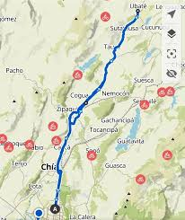
El lugar fue fundado el 12 de abril de 1592 por Bernardo de albornoz, durante la época colonial española. El municipio tiene una población aproximada de 50.000 habitantes en años recientes, incluyendo tanto su zona urbana como rural.
Ubaté es conocida como la "Capital Lechera de Colombia", por su fuerte tradición en agricultura y ganadería, especialmente en la produción de leche y productos lácteos; la economía local gira mucho entorno a la agroindustria y al campo.
SIMBOLOS: HIMNO, BANDERA Y ESCUDO
HIMNO DEL MUNICIPIO DE UBATÉ
Letra:
I
Rico valle de verdes llanuras
fértil tierra que Dios nos brindó
viviremos los años de gloria
siempre en paz con amor y humildad.
II
Madre tierra de grandes figuras
que en su seno las viste crecer
hoy son seres que escalan la gloria
y a su pueblo lo ven florecer.
III
Los labriegos se ganan la vida
desde el alba hasta el atardecer
regresando a su dulce morada
como premio a su duro quehacer.
IV
Nuestro templo reliquia sagrada
admirado por la humanidad
allí guarda un tesoro divino
santo Cristo patrón de bondad.
Autor: Adonai Paiva Rodríguez.
BANDERA DEL MUNICIPIO DE UBATÉ
La bandera del municipio de Ubaté, Cundinamarca, consta de dos franjas horizontales iguales: blanco y verde. El blanco simboliza la paz, la unidad, la inocencia y el espíritu cristiano de sus habitantes. El verde representa la esperanza, el bienestar y la fertilidad del valle.
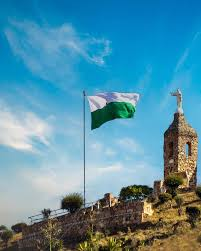
ESCUDO DEL MUNICIPIO DE UBATÉ
El escudo de la Villa de San Diego de Ubaté simboliza la historia, méritos patrios y riqueza agrícola de la región. Se compone de un campo verde con una columna de plata sobre un río, sostenida por nueve brazos que representan los pueblos de la provincia, coronado por símbolos de la religión y la patria.

LOS MEJORES SITIOS TURISTICOS PARA VISITAR,
¿QUÉ ESPERAS?
Ubaté, la "Capital Lechera de Colombia" en Cundinamarca, ofrece una mezcla de turismo religioso, histórico y natural, como:
- Basílica Menor del Santo Cristo de Ubaté: Es uno de los templos católicos más importantes del departamento de Cundinamarca y principal símbolo religioso del municipio de Villa de San Diego de Ubaté. Es muy conocida por su arquitectura, su historia y la devoción al “Santo Cristo de Ubaté”.La basílica tiene un estilo neogótico francés, lo que la hace muy llamativa. Entre sus características destacan:
- Una torre principal de unos 65 metros de altura.
- Tres naves con arcos ojivales típicos del gótico.
- Grandes vitrales con escenas religiosas.
- Un rosetón en la fachada.
- Columnas y detalles en piedra con decoración artística.
Este estilo arquitectónico es poco común en Colombia, por lo que la basílica es considerada una joya del patrimonio arquitectónico del país.

- La Capilla Santa Bárbara es uno de los lugares religiosos y turísticos más representativos, la capilla está ubicada en la cima de un cerro llamado Cerro de Santa Bárbara, al sur del municipio; desde allí se puede ver gran parte del valle de Ubaté y el casco urbano del pueblo, por eso también es un mirador natural muy visitado por turistas y habitantes, ella es considerada protectora contra los rayos; tormentas y desastres naturales; por lo que antiguamente los campesinos del valle le rezaban para proteger sus cultivos y sus hogares, cada año se celebra su fiesta el 4 de diciembre, cuando muchos fieles suben al cerro para participar en misas y celebraciones religiosas.

- El Noviciado San Luis Obispo es un lugar religioso e histórico que se encuentra en Villa de San Diego de Ubaté, en Cundinamarca, Colombia.
Dentro del convento hay una capilla donde se celebran misas, confesiones y momentos de oración. Muchas personas del municipio van allí para participar en celebraciones religiosas o simplemente para tener un momento de tranquilidad espiritual, el lugar es considerado un destino de turismo religioso en Ubaté. Durante celebraciones importantes como Navidad y Semana Santa se realizan actividades y eventos organizados por los religiosos.
📍 La dirección aproximada es:
Carrera 7A # 6-41, Ubaté.
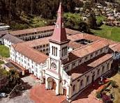
- La Plaza de Mercado es uno de los lugares más tradicionales e importantes del municipio. Allí se concentra gran parte del comercio local y es un punto donde se encuentran campesinos, comerciantes y habitantes de la región para comprar y vender productos.
La plaza funciona todos los días aproximadamente de 6:00 a. m. a 6:00 p. m., incluso en domingos y festivos. No solo es un lugar para comprar mercado. También es un espacio cultural donde se puede:
- Probar comida típica como la fritanga.
- Conocer productos campesinos de la región.
- Vivir el ambiente tradicional de los pueblos de Cundinamarca.

-
Parque Embalse El Hato es uno de los lugares naturales más importantes cerca de Villa de San Diego de Ubaté. Es un gran cuerpo de agua ubicado entre Ubaté y el municipio de Carmen de Carupa, rodeado de montañas y naturaleza.
El embalse está aproximadamente a 130 km de Bogotá, en la provincia de Ubaté, y se encuentra entre las veredas El Hato, Corralejas y Llano Grande.
Podrías realizar actividades como:
- Caminatas y senderismo
- Hacer picnic o asados
- Pesca deportiva
- Paseos en bote o navegación a remo
- Camping
- Hospedarse en cabañas
- Observacion de aves y naturaleza
- Actividades especiales
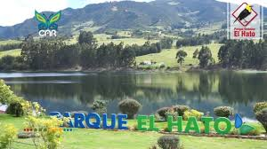
El Cerro de la Teta es una montaña cercana a Ubaté que se ha convertido en un sitio turístico y natural muy visitado del valle. Se destaca porque desde su cima se puede observar gran parte del paisaje de la región. Tiene su ruta de senderismo para los visitantes, aunque las personas de la región conocen varias rutas de atajos, aunque son un poco peligrosas debido a que hay que escalar la montaña y subir una parte muy empiedrada; es una experiencia muy agradable aunque si el día anterior o el mismo dia fue lluvioso lo recomendado es no ir, ya que puede ser un poco peligroso, de igual forma no ir tan tarde porque es muy oscuro
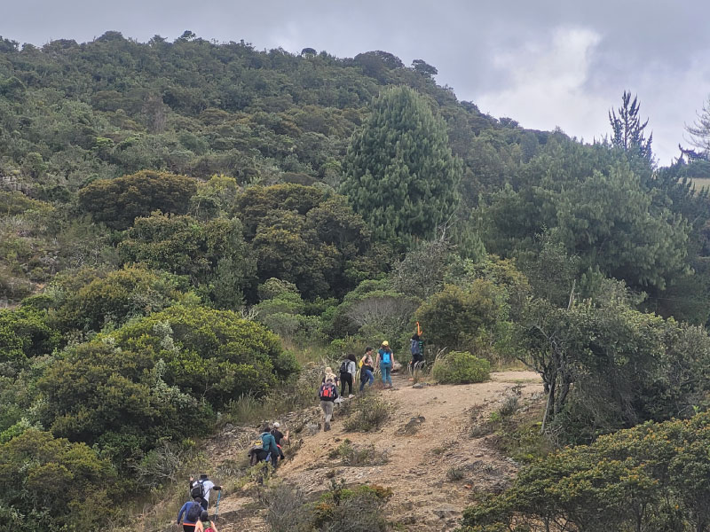
LOS MEJORES RESTAURANTES,
¿QUÉ DESEAS COMER HOY?
- Bandido Burger Bar Ubate - Puntuado con 4.9
Es uno de los lugares más populares del pueblo para comer hamburguesas artesanales. Tiene un ambiente juvenil y moderno, por lo que muchos jóvenes van en la noche a comer o reunirse con amigos.
Reseña: Es famoso por sus hamburguesas grandes y bien preparadas, con diferentes combinaciones de ingredientes y un ambiente relajado tipo bar. Es un sitio muy recomendado para comida rápida de buena calidad.
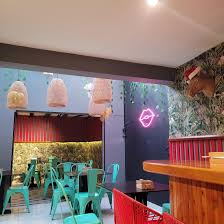
- Puerto Madero Steak House "Ubate" - Puntuado con 4.5
Este restaurante es conocido por sus cortes de carne y parrilla.
Reseña: Tiene un ambiente elegante y tranquilo, ideal para ir en familia o para celebraciones. Su especialidad son las carnes a la parrilla y platos abundantes, por lo que es muy visitado por quienes buscan una comida más completa o especial.
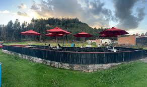
- Casa Nieto - Puntuado con 4.4
Uno de los restaurantes tradicionales del municipio.
Reseña: Ofrece comida variada y típica colombiana, además de platos caseros. Es un lugar bastante conocido entre los habitantes de Ubaté porque combina buen servicio, variedad de platos y un ambiente cómodo para almorzar o cenar.
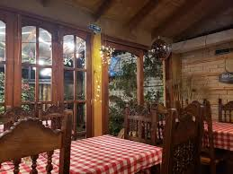
- Restaurante La Regatta, Pescados y Mariscos - Puntuado con 4.3
Especializado en pescados y mariscos.
Reseña: Es uno de los mejores lugares del pueblo para comer platos de mar como mojarra, cazuela o pescado frito. Muchas personas lo visitan cuando quieren algo diferente a la comida típica del altiplano.
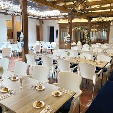
- La Casona Del Valle - puntuado con 4.3
Un restaurante tipo bar-grill.
Reseña: Combina comida con un ambiente social donde se puede comer, tomar algo y compartir con amigos. Es visitado especialmente en horas de la tarde o noche.
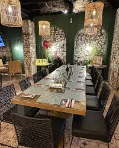
- Euforia - Sushi Grill Bar - Puntuado con 4.9
Es un restaurante-bar moderno en el centro de Ubaté.
Reseña: Se destaca por su propuesta diferente, ya que ofrece comida estilo asiática como sushi y platos a la parrilla. Tiene un ambiente juvenil y tranquilo, ideal para ir con amigos o en una cita. Muchas personas lo visitan en la noche para comer algo y tomar bebidas.
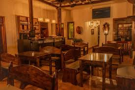
- Mucha Traga Restaurante - Puntuado con 4.4
Un restaurante-bar bastante conocido del pueblo.
Reseña: Ofrece comida colombiana, comidas rápidas y bebidas. Tiene terraza y un ambiente social donde la gente suele reunirse para compartir, ver deportes o pasar la noche con amigos. Además, sirve almuerzos y cenas y está abierto hasta la noche.
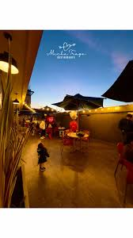
- Doña Leche Alimentos S.A. - Puntuado con 4.4
Es uno de los lugares más conocidos relacionados con alimentos en Ubaté, especialmente por los productos lácteos. Aunque no es exactamente un restaurante tradicional, muchas personas lo visitan o compran allí porque venden productos derivados de la leche como quesos, yogures y otros alimentos típicos de la región.
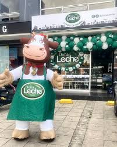
- La mayoría, por no decir que en todos estos restaurantes mencionados, tambien tienen en sus menús la parte de bar, si deseas ir a tomar algo, cualquiera de estos y muchos resturantes más, son súper agradables para ello, de igual forma, si deseas celebrar un cumpleaños o festejar algo, un lugar impresionante para un dia especial.
MEJORES FECHAS PARA VISITAR LA VILLA
En Ubaté se celebran ferias y fiestas de Ubaté normalmente se celebran entre finales de julio y comienzos de agosto cada año. Estas fiestas se hacen en honor al Santo Cristo de Ubaté, cuya celebración principal es el 6 de agosto. Durante esas semanas el municipio realiza muchas actividades como desfiles de carrozas y comparsas, cabalgatas y ferias ganaderas, conciertos y verbenas populares, elección del Reinado de la Simpatía, expocisiones artesanales y gastrónomicas y actividades culturales.
Siendo más específicos, en las ferias y fiestas del pueblo, se celebra con bastant emoción actividades como el color fest
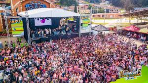
También durante el Reinado, los trajes, las tematicas, los carros disfrazados y escuchar a las candidatas es algo inolvidable
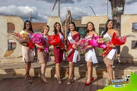
De igual forma, los fuegos pirotecnicos que lanzan, son magicos
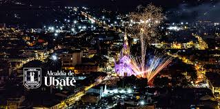